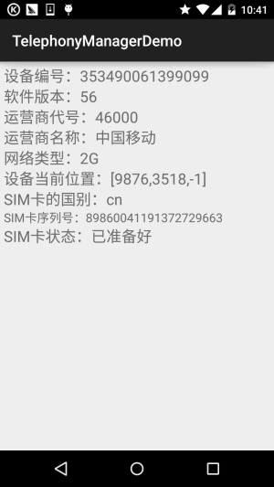
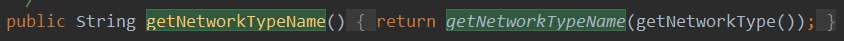
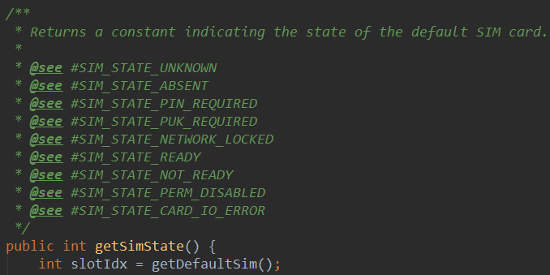
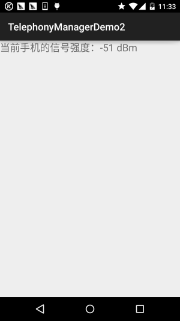

本節の導入：
本章節はAndroid基礎入門チュートリアルの最後の章であり、主に散らばった知識ポイントや、見落とされた知識ポイントの補足を説明します。これらの散らばった知識ポイントには、さまざまなシステムサービスの使用法、例えば本節の電話マネージャー、SMSマネージャー、バイブレーター、アラーム、壁紙など、さらにセンサーなども含まれます！ごちゃごちゃ何でもあります！さて、本節で学ぶのはTelephonyManagerです。名前のとおり、携帯電話の通話状態の管理、電話情報（デバイス情報、SIMカード情報、ネットワーク情報）の取得、電話状態（呼び出し状態、サービス状態、信号強度状態など）の監視、そして電話ダイヤラーを呼び出して電話をかけることもできます！余談はさておき、本節の内容を始めましょう～
公式API：TelephonyManager
1. TelephonyManagerのサービスオブジェクトを取得する
TelephonyManager tManager = (TelephonyManager)getSystemService(Context.TELEPHONY_SERVICE);
2. 使用例
1) ダイヤラーを呼び出して電話番号を発信する
Uri uri=Uri.parse("tel:"+电话号码);
Intent intent=new Intent(Intent.ACTION_DIAL,uri);
startActivity(intent);
2) SIMカード情報とネットワーク情報を取得する
実行結果図：

実装コード：
レイアウトファイル：activity_main.xml：
<LinearLayout xmlns:android="http://schemas.android.com/apk/res/android"
xmlns:tools="http://schemas.android.com/tools"
android:layout_width="match_parent"
android:layout_height="match_parent"
android:orientation="vertical"
android:padding="5dp"
tools:context=".MainActivity">
<TextView
android:id="@+id/tv_phone1"
android:layout_width="match_parent"
android:layout_height="wrap_content"
android:textSize="20sp" />
<TextView
android:id="@+id/tv_phone2"
android:layout_width="match_parent"
android:layout_height="wrap_content"
android:textSize="20sp" />
<TextView
android:id="@+id/tv_phone3"
android:layout_width="match_parent"
android:layout_height="wrap_content"
android:textSize="20sp" />
<TextView
android:id="@+id/tv_phone4"
android:layout_width="match_parent"
android:layout_height="wrap_content"
android:textSize="20sp" />
<TextView
android:id="@+id/tv_phone5"
android:layout_width="match_parent"
android:layout_height="wrap_content"
android:textSize="20sp" />
<TextView
android:id="@+id/tv_phone6"
android:layout_width="match_parent"
android:layout_height="wrap_content"
android:textSize="20sp" />
<TextView
android:id="@+id/tv_phone7"
android:layout_width="match_parent"
android:layout_height="wrap_content"
android:textSize="20sp" />
<TextView
android:id="@+id/tv_phone8"
android:layout_width="match_parent"
android:layout_height="wrap_content"
android:textSize="16sp" />
<TextView
android:id="@+id/tv_phone9"
android:layout_width="match_parent"
android:layout_height="wrap_content"
android:textSize="20sp" />
</LinearLayout>
MainActivity.java：
public class MainActivity extends AppCompatActivity {
private TextView tv_phone1;
private TextView tv_phone2;
private TextView tv_phone3;
private TextView tv_phone4;
private TextView tv_phone5;
private TextView tv_phone6;
private TextView tv_phone7;
private TextView tv_phone8;
private TextView tv_phone9;
private TelephonyManager tManager;
private String[] phoneType = {"未知","2G","3G","4G"};
private String[] simState = {"状态未知","无SIM卡","被PIN加锁","被PUK加锁",
"被NetWork PIN加锁","已准备好"};
@Override
protected void onCreate(Bundle savedInstanceState) {
super.onCreate(savedInstanceState);
setContentView(R.layout.activity_main);
//①获得系统提供的TelphonyManager对象的实例
tManager = (TelephonyManager) getSystemService(Context.TELEPHONY_SERVICE);
bindViews();
}
private void bindViews() {
tv_phone1 = (TextView) findViewById(R.id.tv_phone1);
tv_phone2 = (TextView) findViewById(R.id.tv_phone2);
tv_phone3 = (TextView) findViewById(R.id.tv_phone3);
tv_phone4 = (TextView) findViewById(R.id.tv_phone4);
tv_phone5 = (TextView) findViewById(R.id.tv_phone5);
tv_phone6 = (TextView) findViewById(R.id.tv_phone6);
tv_phone7 = (TextView) findViewById(R.id.tv_phone7);
tv_phone8 = (TextView) findViewById(R.id.tv_phone8);
tv_phone9 = (TextView) findViewById(R.id.tv_phone9);
tv_phone1.setText("设备编号：" + tManager.getDeviceId());
tv_phone2.setText("软件版本：" + (tManager.getDeviceSoftwareVersion()!= null?
tManager.getDeviceSoftwareVersion():"未知"));
tv_phone3.setText("运营商代号：" + tManager.getNetworkOperator());
tv_phone4.setText("运营商名称：" + tManager.getNetworkOperatorName());
tv_phone5.setText("网络类型：" + phoneType[tManager.getPhoneType()]);
tv_phone6.setText("设备当前位置：" + (tManager.getCellLocation() != null ? tManager
.getCellLocation().toString() : "未知位置"));
tv_phone7.setText("SIM卡的国别：" + tManager.getSimCountryIso());
tv_phone8.setText("SIM卡序列号：" + tManager.getSimSerialNumber());
tv_phone9.setText("SIM卡状态：" + simState[tManager.getSimState()]);
}
}
そうそう、AndroidManifest.xmlに権限を追加するのを忘れないでくださいね！
<!-- 添加访问手机位置的权限 --> <uses-permission android:name="android.permission.ACCESS_COARSE_LOCATION"/> <!-- 添加访问手机状态的权限 --> <uses-permission android:name="android.permission.READ_PHONE_STATE"/>
そうそう、もしかすると通常の2G、3G、4Gのようなものではなく、ネットワークの通信方式（世代）を取得したいかもしれません。実はTelephonyManagerクラスのソースコードを見に行くことができます：

このnetworkTypeの値に基づいて、異なるネットワーク通信方式を判断できます。例えば、networkType == 1 ならGPRSのような通信方式です。そしてこのnetworkTypeの値は、

つまり、このgetNetworkType()メソッドで取得できます！さて、これだけ簡単です。上記のように配列を用意して、異なるインデックスに応じて異なる値を表示すればいいのです！そうそう、SIMカード状態についても、文字列配列の中の値はソースコードで確認できます：

その他は自分で探索してみてください～
3) 携帯電話の信号強度を取得する
ネットワーク信号強度の単位はdBm（ミリワットデシベル）で、通常は負の数で表されます。正常な携帯電話の信号変化範囲は-110dBm（悪い）から-50dBm（良い）の間です。もし-50dBmよりも強い（-50dBmを超える）場合、基地局のすぐ近くにいるということです。例えば、私のNexus 5に表示される信号強度は-51dBmで、時には-59dBmです。なぜなら隣の南软ビルの上に基地局があるからです...
また、2G、3G、4Gで信号強度を取得する方法は、いずれもPhoneStateListenerのonSignalStrengthsChanged()メソッドをオーバーライドすることです。信号強度が変化したときにこのイベントが発火するので、このイベント内で信号強度を取得できます！
携帯電話で信号強度を取得するコード例：
dBm =-113+2*asuこれは固定の公式です。asu（独立信号ユニット）
実行結果図：

実装コード：
MainActivity.java：
public class MainActivity extends AppCompatActivity {
private TextView tv_rssi;
private MyPhoneStateListener mpsListener;
private TelephonyManager tManager;
@Override
protected void onCreate(Bundle savedInstanceState) {
super.onCreate(savedInstanceState);
setContentView(R.layout.activity_main);
tManager = ((TelephonyManager)getSystemService(Context.TELEPHONY_SERVICE));
tv_rssi = (TextView) findViewById(R.id.tv_rssi);
mpsListener = new MyPhoneStateListener();
tManager.listen(mpsListener,290);
}
private class MyPhoneStateListener extends PhoneStateListener {
private int asu = 0,lastSignal = 0;
@Override
public void onSignalStrengthsChanged(SignalStrength signalStrength) {
asu = signalStrength.getGsmSignalStrength();
lastSignal = -113 + 2 * asu;
tv_rssi.setText("当前手机的信号强度：" + lastSignal + " dBm" );
super.onSignalStrengthsChanged(signalStrength);
}
}
}
また、筆者のSIMカードはすべて中国移動（チャイナモバイル）のカードなので、中国联通（チャイナユニコム）と中国电信（チャイナテレコム）については分かりませんが、ソースコードに次のようなAPIがあるのを見ました：
- getEvdoDbm()：中国電信3G
- getCdmaDbm()：中国聯通3G
- getLteDbm()：4G
これらは直接dBm信号強度を取得できるはずです。環境が整っている人は試してみてください～
それから、権限を追加するのを忘れないでくださいね！
<!-- 添加访问手机状态的权限 --> <uses-permission android:name="android.permission.READ_PHONE_STATE"/>
4) 携帯電話への着信をすべて監視する
監視した通話記録の結果は、さまざまな方法で取得できます。ここでは通話記録をファイルに書き込む方法を使っていますが、SMSの形式で自分に送信したり、何らかのプラットフォームにアップロードしたりすることもできます。もちろん、通信記録が多くなければSMSでも大丈夫ですが、多すぎると簡単に人に見つかってしまいます！また、ここではServiceではなくActivityを使用しています。つまり、このActivityを開かないと監視できません。通常のニーズはこっそりバックグラウンドで動かすことですが、時間の都合でServiceは書きません。必要であれば自分で修正して、Serviceが起動時に一緒に起動するようにすればいいです！
コード解説:
とても簡単です。実はTelephonyManagerの通話状態リスナーをオーバーライドするだけです。PhoneStateListenerそしてTelephonyManager.listen()メソッドを呼び出して監視します。着信があると、プログラムは着信番号をファイルに記録します！
実装コード：
MainActivity.java：
public class MainActivity extends Activity
{
TelephonyManager tManager;
@Override
public void onCreate(Bundle savedInstanceState)
{
super.onCreate(savedInstanceState);
setContentView(R.layout.main);
// 取得TelephonyManager对象
tManager = (TelephonyManager)
getSystemService(Context.TELEPHONY_SERVICE);
// 创建一个通话状态监听器
PhoneStateListener listener = new PhoneStateListener()
{
@Override
public void onCallStateChanged(int state, String number)
{
switch (state)
{
// 无任何状态
case TelephonyManager.CALL_STATE_IDLE:
break;
case TelephonyManager.CALL_STATE_OFFHOOK:
break;
// 来电铃响时
case TelephonyManager.CALL_STATE_RINGING:
OutputStream os = null;
try
{
os = openFileOutput("phoneList", MODE_APPEND);
}
catch (FileNotFoundException e)
{
e.printStackTrace();
}
PrintStream ps = new PrintStream(os);
// 将来电号码记录到文件中
ps.println(new Date() + " 来电：" + number);
ps.close();
break;
default:
break;
}
super.onCallStateChanged(state, number);
}
};
// 监听电话通话状态的改变
tManager.listen(listener, PhoneStateListener.LISTEN_CALL_STATE);
}
}
実行結果：
注意！このプログラムをフォアグラウンド（前面）に置いてください！別の電話からその番号に発信すると、DDMSのFile Explorerのアプリの対応するパッケージ名のfilesディレクトリにphoneListファイルが確認できます。これをコンピューターにエクスポートして開くことができます。ファイルのおおよその内容は次のとおりです：
THR Oct 30 12:05:48 GMT 2014 着信: 137xxxxxxx
そうそう、権限を忘れないで！
<!-- 授予该应用读取通话状态的权限 --> <uses-permission android:name="android.permission.READ_PHONE_STATE"/>
5) ブラックリストからの着信を自動的に切断する
いわゆるブラックリストとは、いくつかの電話番号を1つの集合に追加し、携帯電話がこれらの電話を受信したときに直接切断するというものです！しかしAndroidは電話を切断するAPIを提供していないため、AIDLを通じてサービス内のAPIを呼び出して電話切断を実現する必要があります！
そこで最初にやることは、Androidソースコード内の以下の2つのファイルをsrcの対応する場所にコピーすることです。それらはそれぞれ、com.android.internal.telephonyパッケージ配下のITelephony.aidl;
android.telephonyパッケージ配下のNeighboringCellInfo.aidl;
対応するパッケージを作成してください！つまりaidlファイルを上記のパッケージ配下に置く必要があります！！！ あとはITelephonyのendCallを呼び出すだけで電話を切断できます！
ここでは簡単な単一番号のblockを示しています。番号を入力してblockボタンをクリックすると、その後にblockした電話が掛かってきた場合、直接切断されます。コードは比較的簡単なので、以下に貼り付けます。使用しているエミュレーターがGenymotionなので、プログラム実行後のスクリーンショットは示しません！
MainActivity.java：
public class MainActivity extends Activity {
private TelephonyManager tManager;
private PhoneStateListener pListener;
private String number;
private EditText locknum;
private Button btnlock;
public class PhonecallListener extends PhoneStateListener
{
@Override
public void onCallStateChanged(int state, String incomingNumber) {
switch(state)
{
case TelephonyManager.CALL_STATE_IDLE:break;
case TelephonyManager.CALL_STATE_OFFHOOK:break;
//当有电话拨入时
case TelephonyManager.CALL_STATE_RINGING:
if(isBlock(incomingNumber))
{
try
{
Method method = Class.forName("android.os.ServiceManager")
.getMethod("getService", String.class);
// 获取远程TELEPHONY_SERVICE的IBinder对象的代理
IBinder binder = (IBinder) method.invoke(null,
new Object[] { TELEPHONY_SERVICE });
// 将IBinder对象的代理转换为ITelephony对象
ITelephony telephony = ITelephony.Stub.asInterface(binder);
// 挂断电话
telephony.endCall();
}catch(Exception e){e.printStackTrace();}
}
break;
}
super.onCallStateChanged(state, incomingNumber);
}
}
@Override
protected void onCreate(Bundle savedInstanceState) {
super.onCreate(savedInstanceState);
setContentView(R.layout.activity_main);
locknum = (EditText) findViewById(R.id.locknum);
btnlock = (Button) findViewById(R.id.btnlock);
//获取系统的TelephonyManager管理器
tManager = (TelephonyManager) getSystemService(TELEPHONY_SERVICE);
pListener = new PhoneStateListener();
tManager.listen(pListener, PhoneStateListener.LISTEN_CALL_STATE);
btnlock.setOnClickListener(new OnClickListener() {
@Override
public void onClick(View v) {
number = locknum.getText().toString();
}
});
}
public boolean isBlock(String phone)
{
if(phone.equals(number))return true;
return false;
}
}
権限、権限、権限：
<!-- 授予该应用控制通话的权限 --> <uses-permission android:name="android.permission.CALL_PHONE" /> <!-- 授予该应用读取通话状态的权限 --> <uses-permission android:name="android.permission.READ_PHONE_STATE" />
また、関連する属性とメソッドの中国語版については次を参照してください：Android電話情報関連API
3. 本節のサンプルコードのダウンロード
本節のまとめ：
さて、本節のTelephonyManager（電話マネージャー）に関する学習はここまでです。おそらく開発ニーズの大部分をカバーしているはずです。何か漏れがあれば、ぜひご指摘ください～
ありがとうございます～